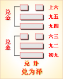
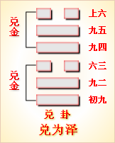

<!DOCTYPE html PUBLIC "-//W3C//DTD XHTML 1.0 Transitional//EN" "http://www.w3.org/TR/xhtml1/DTD/xhtml1-transitional.dtd">

<html xmlns="http://www.w3.org/1999/xhtml">
<head>
<meta content="text/html; charset=utf-8" http-equiv="Content-Type"/>
<title>周易第五十八卦：兑卦 兑为�?兑上兑下原文解释翻译-周易-国学�?/title>
<meta content="周易,兑卦,兑为�?兑上兑下" name="keywords"/>
<meta content="周易,兑卦,兑为�?兑上兑下，周易第五十八卦：兑�?兑为�?兑上兑下解释翻译�?（兑为泽）兑上兑�?《兑》：亨。利贞�?初九，和兑，吉�?九二，孚兑，吉，悔亡�?六三，来兑，凶�?九四，商兑未宁，介疾有喜�?九五，孚于剥，有厉�?上六，引兑�? name="description"/>
<link href="css.css" media="screen" rel="stylesheet" type="text/css"/>
</head>
<body>
<div class="gxlayout">
</div>
<div class="gxlayout">
<div class="ihead">
<div class="title"><a>周易</a></div>
<ul class="more fl">
<li>当前位置:<a>国学梦首�?/a> &gt; <a>国学经典</a> &gt; <a>经部</a> &gt; <a>四书五经</a> &gt; <a>周易</a> &gt;  周易第五十八卦：兑卦 兑为�?兑上兑下原文解释翻译</li>
</ul>
</div>
<div class="gxbl fl">
<div class="latitle">

<h1>周易第五十八卦：兑卦 兑为�?兑上兑下</h1>
<div class="lainfo"><span>作者：佚名</span> <span>全集�?a>周易</a></span> <span>来源：网�?/span> <span>[<a rel="nofollow" target="_blank">挑错/完善</a>]</span></div>
</div>
<div class="lacontent">
<div class="clearfix"></div>
<p style="text-align:center"><strong></strong></p>
<p style="text-align:center"><a>周易第五十八卦详�?/a></p>
<p style="text-align:center"><a>第五十八卦初九爻详解</a>　<a>第五十八卦九二爻详解</a>　<a>第五十八卦六三爻详解</a></p>
<p style="text-align:center"><a>第五十八卦九四爻详解</a>　<a>第五十八卦九五爻详解</a>　<a>第五十八卦上六爻详解</a></p>
<p><strong><a target="_blank">周易</a>第五十八�?�?兑为�?兑上兑下</strong></p>
<p>兑：亨，利贞�?/p>
<p>彖曰：兑，说也。刚中而柔外，说以利贞，是以顺乎天，而应乎人。说以先民，民忘其劳;说以犯难，民忘其�?说之大，民劝矣哉!</p>
<p>象曰：丽泽，�?君子以朋友讲习�?/p>
<p>初九：和兑，吉。象曰：和兑之吉，行未疑也�?/p>
<p>九二：孚兑，吉，悔亡。象曰：孚兑之吉，信志也�?/p>
<p>六三：来兑，凶。象曰：来兑之凶，位不当也�?/p>
<p>九四：商兑，未宁，介疾有喜。象曰：九四之喜，有庆也�?/p>
<p>九五：孚于剥，有厉。象曰：孚于剥，位正当也�?/p>
<p>上六：引兑。象曰：上六引兑，未光也�?/p>
<p>关键词：周易,兑卦,兑为�?兑上兑下</p>
<div class="clearfix"></div>
<div class="title"><div class="thot">解释翻译</div><span>[挑错/完善]</span></div><p><a href="58_兑卦.html" target="_blank">兑卦</a>：亨通。吉利的占问�?/p>
<p>初九：和睦愉快，吉利�?/p>
<p>九二;以捉到俘虏为快事，吉利，没有悔恨�?/p>
<p>六三：以使人归顺为快事，凶险�?/p>
<p>九四：谈判和睦相处的问题，尚未得出结果。小摩擦容易解决�?/p>
<p>九五：被剥国所俘虏，危险�?/p>
<p>上六：引导大家和睦相处�?/p>
<div class="title"><div class="thot">注释出处</div><span>[请记住我�?国学�?www.guoxuemeng.com]</span></div><p>①兑(yue)是本卦的标题。兑的意思是悦，高兴，愉快。全卦的内容主要是讲国与国之间的邦交。标题的“兑”字是卦中多见词�?/p>
<p>②率兑：�?抓到俘虏为快事�?/p>
<p>③来：使人归顺�?/p>
<p>④商：谈判。宁：定下来，得出结果�?/p>
<p>⑤介：小。介疾：小毛病。有喜：有好结果�?/p>
<p>(6)剥：国名�?/p>
<p>7引：引导�?/p>
<div class="clearfix"></div>
<div class="contextdhall clearfix">
<ul>
<li>上一篇：<a href="57_巽卦.html">周易第五十七卦：巽卦 巽为�?巽上巽下</a> </li>
<li>下一篇：<a href="59_涣卦.html">周易第五十九卦：涣卦 风水�?巽上坎下</a> </li>
<li>全   文�?a>周易</a></li>
</ul>
</div>
</div>
<div class="clearfix mt20"></div>
</div>
</div>
<div class="clearfix mt20"></div>
<div class="gxlayout">
</div>
<script>
var _hmt = _hmt || [];
(function() {
  var hm = document.createElement("script");
  hm.src = "https://hm.baidu.com/hm.js?872034ded637616c5cf8e173a446bb0e";
  var s = document.getElementsByTagName("script")[0];
  s.parentNode.insertBefore(hm, s);
})();
</script>
</body>
</html>
